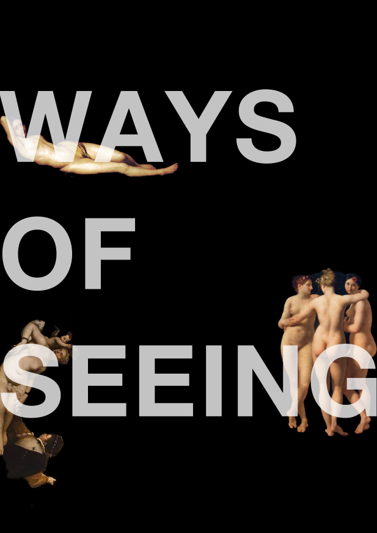
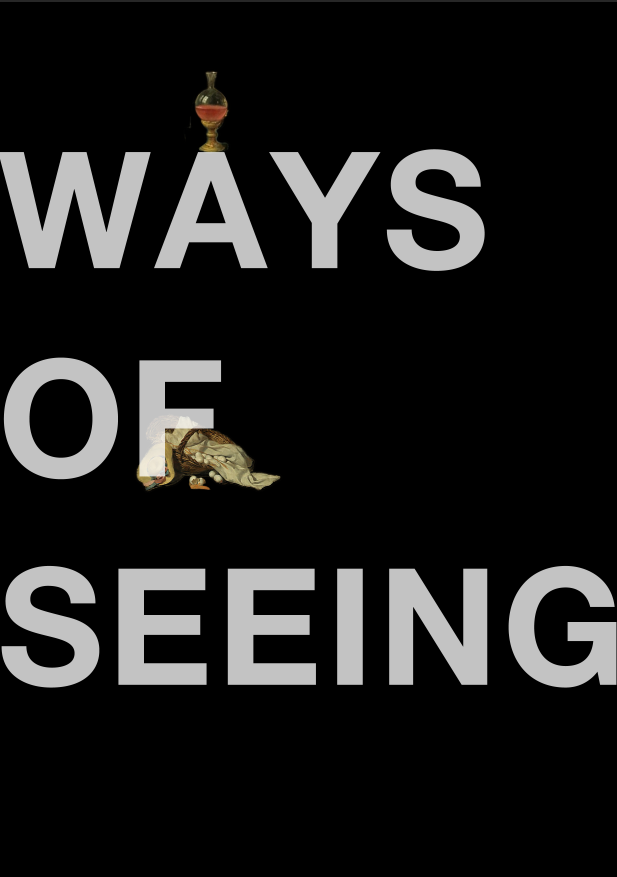
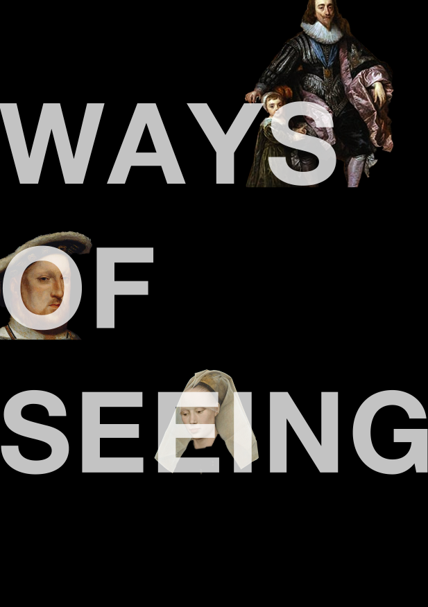
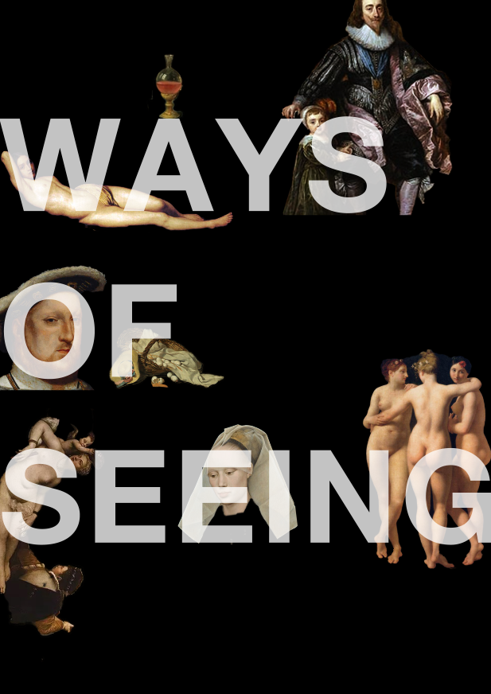

Reflection to Week One Readings
The second and the third episode stuck out to me, so here is a poster based on Berger’s ideas about nudity, powerful figures and daily day objects depicted on European oil paintings.

I found it interesting that Berger’s explanations of the difference between nudity and nakedness. He argues that nakedness refers to an awareness of being naked, but nudity is displaying the nakedness in public and supposed to be seen. Sometimes, a nude scene of a female in paintings is associated with a male who stands for power, surveillance and dominance. For example, Eve is blamed and subservient to Adam after they eat the Forbidden fruit, which means Adam sorta becomes an agent of god. Also, the nudity satisfies the male spectator particularly and has nothing to do with the woman’s sexual life in the paintings.


